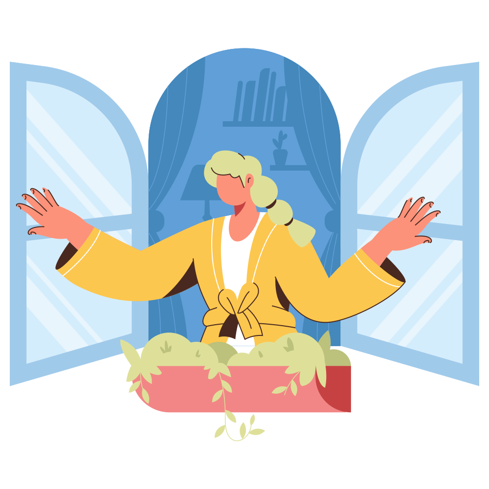
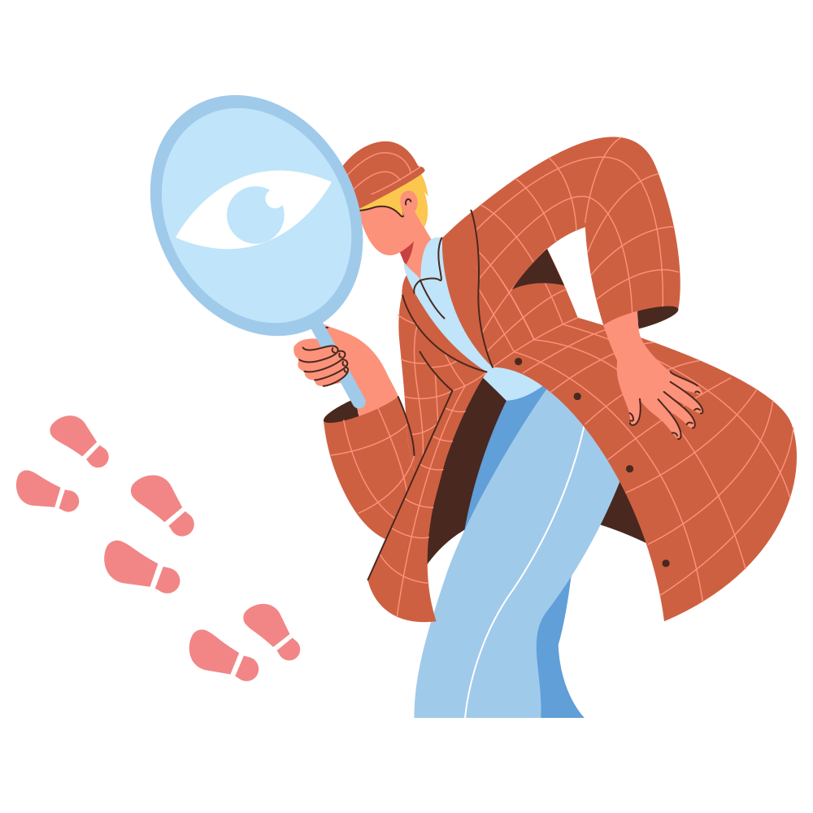
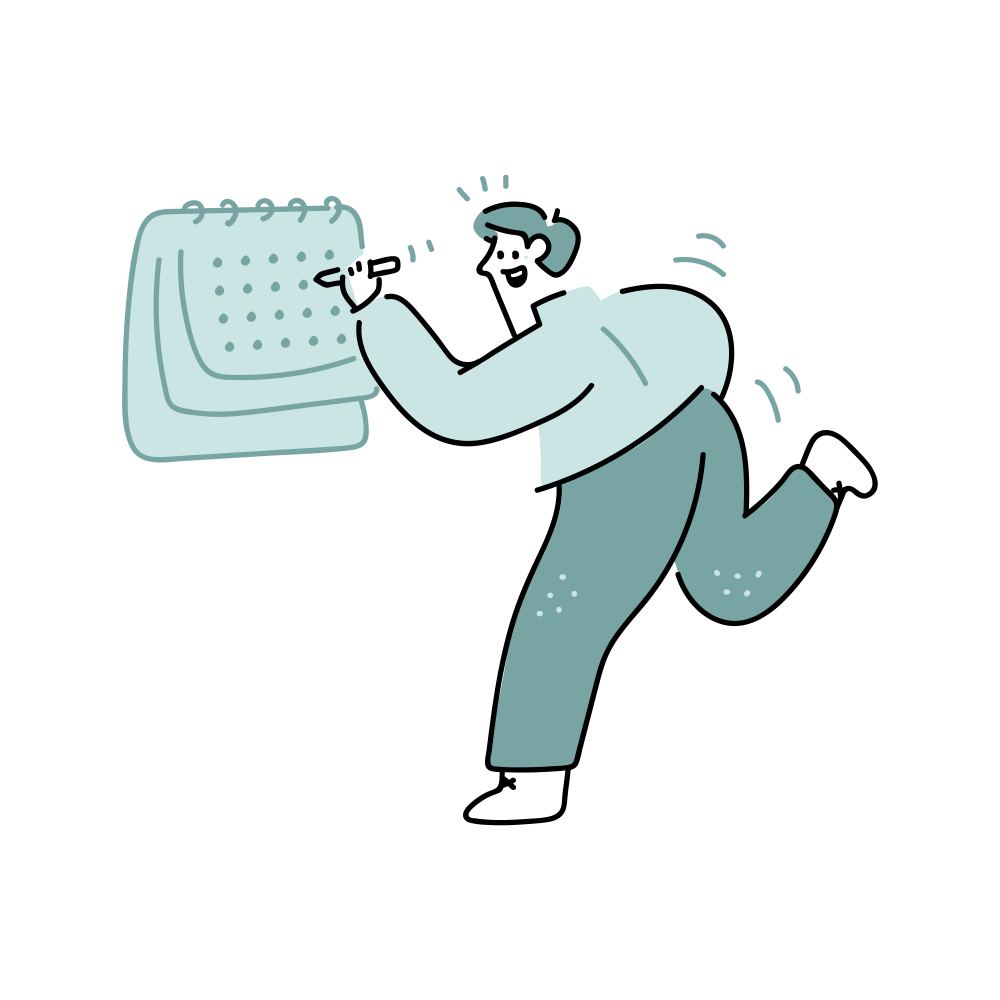

Люби себя, люби! Жарким огнем, ночью и днем!

Жизнь как коробка шоколадных конфет, начинка может быть разная, но не забывай читать состав, так легче

Жить в гармонии с собой гораздо важнее, чем все успевать

Жизнь полна нюансов и после КВН, но не стоит сильно париться